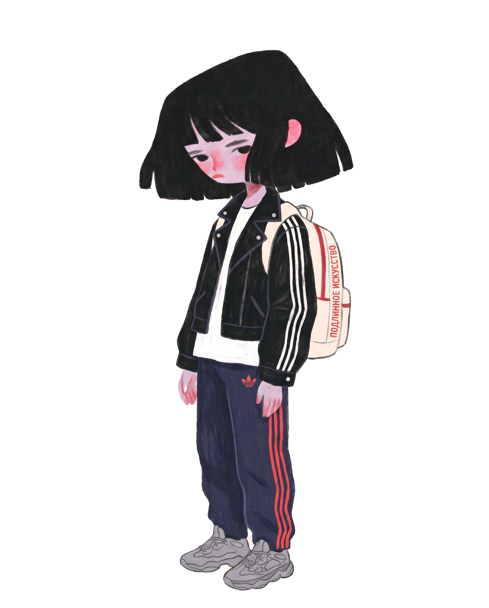

Почти всю жизнь я проучилась в Вальдорфской школе. Для тех, кто знает — это уже много о чём говорит.
Начиная с 8 класса я делала проекты, связанные с фотографией, танцами и дизайном.
Дойдя до 11 класса, я чётко решила: либо философия, либо дизайн. По подсказке учителя всё-таки пошла на «Коммуникационный дизайн» в ВШЭ и Школу Дизайна.
Поступление. Для подготовки я делала вручную зины и только перед подачей решила быстро освоить Фигму. Проектом был ребрендинг платформы «Bereg» — 75 баллов из 100.
Первым проектом на 1 курсе стала разработка выдуманного бренда, построенного на принципе передачи энергии, — «chenergy».
К концу 2 курса я вдруг поняла, что дизайн — это всегда дизайн чего-то. Дизайн не может быть искусством сам по себе. Я поняла, что хочу создавать это что-то.
Я перешла на современное искусство. Единственное, чему я благодарна, — это возможность создать перформанс «Посестрие».
Через полгода я, сверкая пятками, убежала на «Ивент Дизайн. Театр. Перформанс».
Я очень благодарна всем случайностям и людям, которые меня туда привели. Всё-таки я рукотворный человек, можно сказать ремесленник. Мне надо быть в контакте.
Сейчас я аккумулирую ресурс для создания народного фестиваля искусств в качестве диплома.
